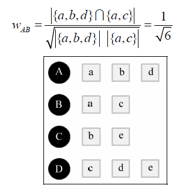

本次比赛中，我们使用的图书馆借阅记录一共18999条，涵盖6134个读者，涉及12516本图书，
我们采用准确率/召回率评测推荐算法的精度，最终测得改进型基于用户的协同过滤算法(UserIIF)
为最优，因此我们选用该算法建立图书推荐系统。
算法简介
基于用户的协同过滤算法(UserCF)主要包括两个步骤:
1.找到和目标用户兴趣相似的用户集合;
2.找到这个集合中的用户喜欢的，且目标用户没有听说过的物品推荐给目标用户。
首先我们计算每一对用户相互之间的关联程度，协同过滤算法主要利用行为的相似度
计算兴趣的相似度。给定用户u和用户v，令N(u)表示用户u曾经有过正反馈的物品集合，令N(v)
为用户v曾经有过正反馈的物品集合。我们采用Jaccard公式来计算用户u、v之间的兴趣相似度，
用矩阵W[u][v]来存储运算结果。如计算如下的兴趣相似度，我们采取Jaccard公式即可获得结果：

为了减少热门公共书籍对于推荐结果的影响，我们采用UserCF算法的改进版，通过惩罚
用户u和用户v共同兴趣列表中热门物品来提高推荐的准确性，即改进版的UserIIF算法。
我们使用python进行数据的生成，并将其导入到数据库当中：
def UserSimilarity(train):
# build inverse table for item_users
item_users = dict()
for u, items in train.items():
for i in items.keys():
if i not in item_users:
item_users[i] = set()
item_users[i].add(u)
#calculate co-rated items between users
C = dict()
N = dict()
for i, users in item_users.items():
for u in users:
N[u] += 1
for v in users:
if u == v:
continue
C[u][v] += 1 / math.log(1 + len(users))
#calculate finial similarity matrix W
W = dict()
for u, related_users in C.items():
for v, cuv in related_users.items():
W[u][v] = cuv / math.sqrt(N[u] * N[v])
return W
在计算出每一对用户之间的兴趣相似度后，我们就可以利用该兴趣相似度矩阵进行兴趣图
书的排名。对于一个用户A，其对于书籍r的感兴趣程度，就可以量化为数据的形式，其等于所
有借阅该书的用户与用户A兴趣相似度的总和。我们使用pyhton实现了相关数据的生成和处理：
def Recommend(user, train, W):
rank = dict()
interacted_items = train[user]
for v, wuv in sorted(W[u].items, key=itemgetter(1), \
reverse=True)[0:K]:
for i, rvi in train[v].items:
if i in interacted_items:
#we should filter items user interacted before
continue
rank[i] += wuv * rvi
return rank
在获得用户图书兴趣度的推荐排名后，我们选择10本排名最高的图书推荐给用户。由于本次进行数据
挖掘的数据较少，因此会出现无关联的情况，即该用户所借书籍无其他人借阅。我们采取最流行算法
向用户推荐借阅量最高的10本书，供用户选择。
我们使用python绘图工具进行了数据可视化处理，可以更加直观地查看到我校热门书籍的借阅情况：
为了将数据挖掘创新成果运用到实际生活当中来，我们团队开发了一款手机app，旨在方便同学们能够
更加便捷地获取学校图书推荐信息。
1.用户初始化操作界面

2.输入学号查询界面

3.查询结果显示界面

Android客户端:App下载
基于用户的协同过滤算法是推荐系统中最古老的算法。
该算法在1992年被提出。作为推荐系统领域中最著名的算法之一，该算法在实际生活有着广泛的运
用。基于用户的协同过滤算法设计的推荐系统已经被广泛地运用在实际生活当中，成为推进生活
智能化、便捷化不可或缺的一部分。我校图书馆借阅历史纪录数据具有巨大的挖掘价值，通过整
合和分析隐藏在一条条借阅记录中的信息，我们可以实现智能化的图书资源推送，了解我校学生
学术兴趣倾向所在，分析我校图书馆图书资源的使用热度情况，合理化地进行学校图书资源的分配
和管理。

如今，移动端进行个人活动的管理已经成为了人们便捷
生活化重要的一部分，校园生活也不例外。
因而我们选择了通过手机App端展示数据挖掘成果，建立移动端智能推荐的图书馆管理系统，方便
同学们获取图书推荐资源，更加便捷地开展学习生活。我们也希望以本APP为基础平台，逐步扩展该
系统功能，实现个人图书借阅和管理，电子资料的在线共享等功能，方便同学们的日常生活。
-
图书智能推荐
-
图书动态管理
-
电子资料共享
-
便捷借阅管理
{% if site.duoshuo_username %}
{% endif %}